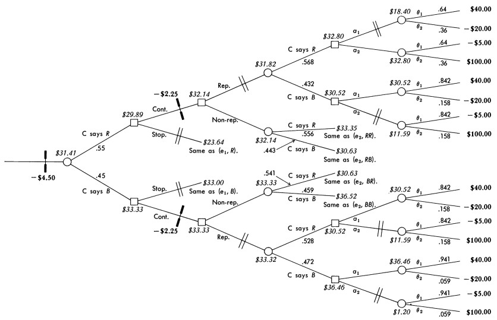
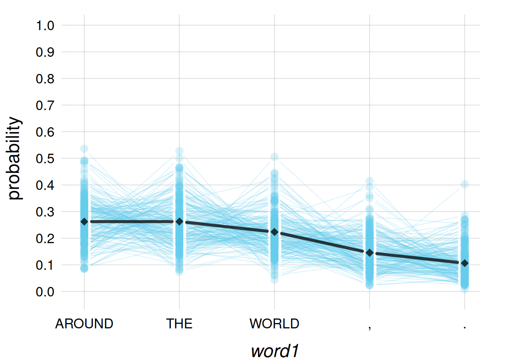
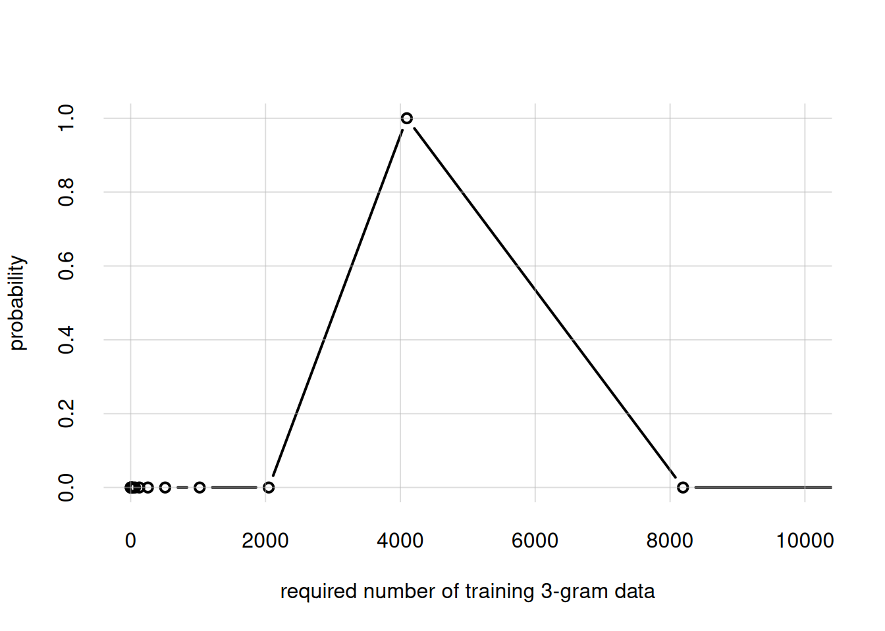
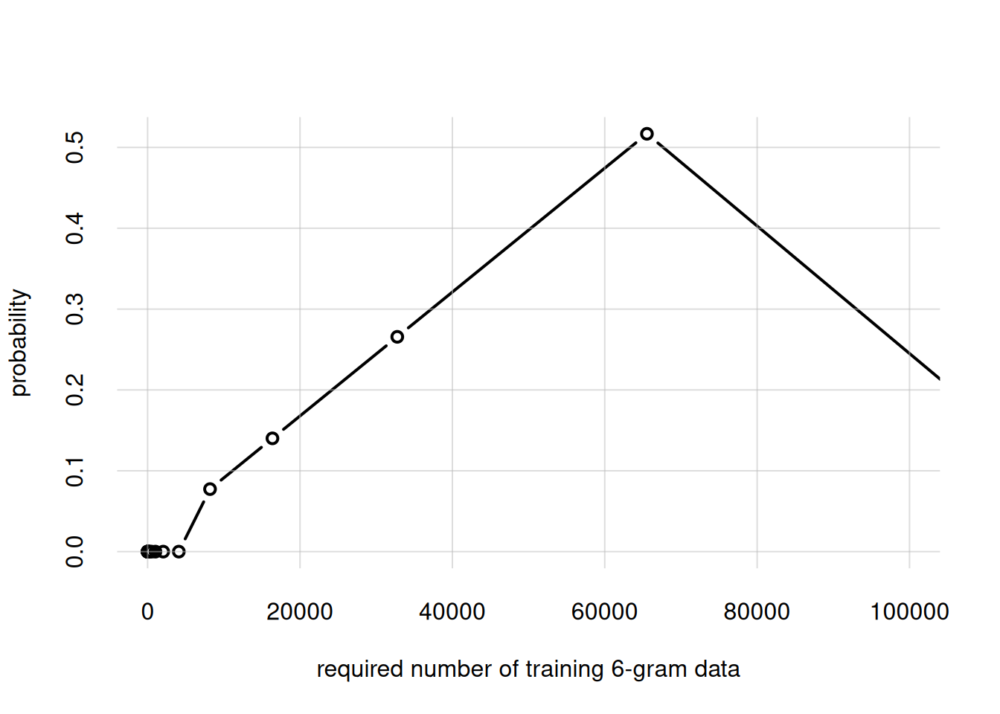

source('tplotfunctions.R')
source('OPM_nominal.R')
source('textpreparation.R')
set.seed(400)34 Example application: “small language model”
\(\DeclarePairedDelimiter{\set}{\{}{\}}\)
34.1 Natural language as inference and decision
In § 2.2 we remarked that even a process like speaking involves a continuous decision-making. Each uttered word is chosen among an infinity of other possible ones. The choice depends not only on the object or idea that has to be communicated at the moment, but also on long-term goals and consequences. Is the conversation meant to be funny? Is it to explain something in the most precise way possible? What’s the probability that this particular choice of words offend the listener? What’s the probability that this possible sentence is misunderstood, and what would happen in that case?
The decision-making underlying speaking is remarkably complex, and can only be represented by a deep sequence of decisions and outcomes (we’ll discuss decision sequences in ch. 36), trying to forecast short-term and long-term future consequences. Most of this decision-making takes place almost unconsciously in humans, by means of approximate, heuristic procedures. But it’s a decision-making process nevertheless.

Building an AI agent that can speak in the sense above is still out of reach. Speaking in that sense requires an agent to have long-term goals and a set of values. But speaking can be mimicked, at least for short time spans, by a different inference and decision process. In human speech the choice of words depends on future goals as much or more than past factors; but we can try to draw an inference based on past factors alone.
In the simplest inference of this kind, an agent can assign a degree of belief about the word that “should follow next”, based on the words that precede it. This is how the next-word predictors of some smartphone keyboards work, and it is essentially also the way Large Language Models (LLMs) and General Pretrained Transformers (GPTs) work. The inference is based on the frequencies of many different sequences of words, learned from a huge amount of written or spoken texts.
This way of operation is also the reason why we can’t really say that large language models understand language, despite some literature stating that they do. They don’t do any kind of forecast of the consequences of their word choice, nor any inferences about the intentions of their interlocutor; not even approximate, heuristic ones. They have simply learned word frequencies from a huge variety of contexts.
34.2 The OPM as a small language model
Algorithms that implement the kind of word inference just described, usually do so in an exchangeable way. They use the frequencies of different word sequences, without regard to whether most of those sequences occur, say, in older rather than newer texts.
Our OPM is also designed to use built-in exchangeable beliefs, and in the previous chapter we saw its extreme versatility with exchangeable inferences of nominal variates – which is just what words, more or less, are. So let’s try to use it for word inference, and see if it can mimic speech. Of course we cannot expect spectacular results: large language models manage to make their remarkable inferences after learning more than tens of trillions (10 000 000 000 000) of words, which require huge amounts of memory and time. Owing to our limitations of memory and time, our OPM can only act as a “small language model”.
To use the OPM this way, we define a population of \(n\) variates, let’s say \(n = 3\). The three variates are defined as consecutive words in some specific set of texts. We can call them \({\small\verb;word1;}\), \({\small\verb;word2;}\), \({\small\verb;word3;}\), and so on. Instead of words it’s actually best to use tokens, which comprise not only words, but punctuation marks like ,.;:!? and other signs. (The exact definition of token depends on the specific application, and can even include parts of words.) Such a sequence of \(n\) tokens is often called an n-gram.
Preparing the training data from some text
In order to prepare the training data for our OPM agent, let’s load some helper R functions defined in the textpreparation.R file, as well as the OPM functions, from the usual directory
https://github.com/pglpm/ADA511/blob/master/code:
The function preparengramfiles() takes three input arguments:
inputfile: the name of a text.txtfile, used to train the agent;outsuffix: the suffix for the output files (see below);n: the \(n\) of the n-grams, defaultn = 3;maxtokens: the maximum number of unique tokens to use – the “vocabulary” – in case we need to save memory; default ismaxtokens = Inf, which uses all tokens from the input text.
The function creates two csv files: one containing the training data with all n-grams from the input text, and one containing the metadata, consisting in the vocabulary. It outputs the file names as list with elements metadata and data. These files have exactly the same format used in the previous chapter; for our OPM agent these data and metadata aren’t qualitatively different from the ones of the adult-income task.
For simplicity, the helper function above converts all text to upper case and ASCII characters; it replaces every sequence of digits 0–9 with the single lowercase letter x; and only keeps the following punctuation: ,.;:?!%$&@+'/-.
As a concrete example let’s start with a simple text: the lyrics of Daft Punk’s song Around the World:
Around the world, around the world.
Around the world, around the world.
These two lines are stored in the file texts/around_the_world.txt. We shall use 3-grams to train our agent:
ngramfiles <- preparengramfiles(
inputfile = 'texts/around_the_world.txt',
outsuffix = 'around',
n = 3,
maxtokens = Inf
)Unique tokens: 5.Data: 22 3-grams.Files saved.The helper function tells us that it used five unique tokens, and from the text it produced a training dataset of 22 3-grams. Let’s take a look at the training dataset:
read.csv(ngramfiles$data) word1 word2 word3
1 AROUND THE WORLD
2 THE WORLD ,
3 WORLD , AROUND
4 , AROUND THE
5 AROUND THE WORLD
6 THE WORLD .
7 WORLD . AROUND
8 . AROUND THE
9 AROUND THE WORLD
10 THE WORLD ,
11 WORLD , AROUND
12 , AROUND THE
13 AROUND THE WORLD
14 THE WORLD .
15 WORLD . AROUND
16 . AROUND THE
17 AROUND THE WORLD
18 THE WORLD ,
19 WORLD , AROUND
20 , AROUND THE
21 AROUND THE WORLD
22 THE WORLD .We see that the token vocabulary consists of {AROUND THE WORLD , .}. The training data consist of all sequences, 22 in total, of three consecutive tokens present in the text. Note a specific word in the original text therefore usually appears in three different datapoints, except for the very first and very last two words.
Let’s build an opmSLM agent and make it learn from these metadata and data:
opmSLM <- buildagent(
metadata = ngramfiles$metadata,
data = ngramfiles$data
)Token inferences
We ask the opmSLM agent to draw an inference about \({\small\verb;word1;}\), and sort the results in order of decreasing probabilities:
probs <- infer(agent = opmSLM, predictand = 'word1')
sort(probs, decreasing = TRUE)word1
AROUND THE WORLD , .
0.262502 0.262502 0.223438 0.145311 0.106248 These degrees of belief make sense: in the learning text, if we take any token that can be followed by two more, we find AROUND, THE, and WORLD with approximately equal frequencies, somewhat less for WORLD because it also occurs in second-last position. The two punctuation marks occur with around half those frequencies.
The agent learned from just two lines, though. Let’s inspect the agent’s beliefs about the frequencies in a possibly larger text, by means of the plotFsamples1D() function:
plotFsamples1D(agent = opmSLM,
n = 200,
predictand = 'word1',
sort = +Inf,
ylim = c(0,1))
so the agent is open to possible changes in the frequencies, if it were given more training data.
Let’s use the agent as a small language model. If a sequence of two tokens is “AROUND THE”, what should the next word be?
probs <- infer(agent = opmSLM,
predictand = 'word3',
predictor = list(word1 = 'AROUND', word2 = 'THE'))
sort(probs, decreasing = TRUE)word3
WORLD , . AROUND THE
0.98125345 0.00468664 0.00468664 0.00468664 0.00468664 The agent believes at 98% that it should be WORLD!
Our agent can actually also do inferences that many large language models are not designed to do. For instance it can guess the token preceding a sequence of two tokens. What should come before “THE WORLD”?
probs <- infer(agent = opmSLM,
predictand = 'word1',
predictor = list(word2 = 'THE', word3 = 'WORLD'))
sort(probs, decreasing = TRUE)word1
AROUND , . THE WORLD
0.98125345 0.00468664 0.00468664 0.00468664 0.00468664 It can also guess the middle token. What should be between THE and ,?
probs <- infer(agent = opmSLM,
predictand = 'word2',
predictor = list(word1 = 'THE', word3 = ','))
sort(probs, decreasing = TRUE)word2
WORLD , . AROUND THE
0.96336537 0.00915866 0.00915866 0.00915866 0.00915866 34.3 A more demanding example
The simple text we chose was just for testing. Let’s now use a slightly larger text: the United Nation’s Universal Declaration of Human Rights, stored in texts/human_rights.txt. The core of this document is a set of Articles, for example:
Article 1
All human beings are born free and equal in dignity and rights. They are endowed with reason and conscience and should act towards one another in a spirit of brotherhood.Article 2
Everyone is entitled to all the rights and freedoms set forth in this Declaration, without distinction of any kind, such as race, colour, sex, language, religion, political or other opinion, national or social origin, property, birth or other status. […]
Prepare the metadata and training dataset:
ngramfiles <- preparengramfiles(
inputfile = 'texts/human_rights.txt',
outsuffix = 'rights',
n = 3,
maxtokens = Inf
)Unique tokens: 506.Data: 1904 3-grams.Files saved.This time the vocabulary is over 500 tokens, and the agent will learn from around 2000 3-grams.
Build an agent from these metadata and data. We call it again opmSLM (rewriting the previous one). To avoid memory problems, we use the option savememory = TRUE, which stores the learning information in a memory-efficient way, at the cost of slightly longer computation times during inferences.
opmSLM <- buildagent(
metadata = ngramfiles$metadata,
data = ngramfiles$data,
savememory = TRUE
)Now some inferences. Recall that the text is converted to uppercase, and all numbers are replaced with x. Many pieces of text thus begin with “ARTICLE x”. Ask the agent what should follow after these two tokens. Let’s just display the five most probable tokens:
probs <- infer(agent = opmSLM,
predictand = 'word3',
predictor = list(word1 = 'ARTICLE', word2 = 'x'))
sort(probs, decreasing = TRUE)[1:5]word3
EVERYONE NO ALL MEN NOTHING
0.7329435 0.1332633 0.0666322 0.0333166 0.0333166 Roughly 75% of Articles begin with “everyone…”, and this is roughly the agent’s belief.
Apparent grammar knowledge
Large language models seem to have good grammar knowledge. This knowledge comes, not from the study of grammar rules, but again simply from the frequencies of particular word combinations in their training texts. Let’s see if our small language model displays some rudimentary “knowledge” of grammar.
Which word should follow the noun “right”, as in “the right…”?
probs <- infer(agent = opmSLM,
predictand = 'word3',
predictor = list(word1 = 'THE', word2 = 'RIGHT'))
sort(probs, decreasing = TRUE)[1:5]word3
TO OF FREELY THE AND
0.9280423224 0.0356950206 0.0356950206 0.0000011285 0.0000011285 The opmSLM agent believes at 93% that the preposition “to” should follow “the right”: “the right to…”. Well learned!
Another grammar question: which is correct, “everyone has”, or “everyone have”? Let’s check the agent’s beliefs about either sequence. To this purpose we use infer() to calculate the probabilities of all tokens after EVERYONE, and then select the probabilities of the particular tokens HAS and HAVE. We can compare the two probabilities against each other:
probs <- infer(agent = opmSLM,
predictand = 'word2',
predictor = list(word1 = 'EVERYONE'))
probHas <- probs['HAS']
probHave <- probs['HAVE']
## probability of each, assuming that one of them is true
c(probHas, probHave) / (probHas + probHave) HAS HAVE
0.999273886 0.000726114 A 99.9% belief that “everyone has” is the correct one between the two!
Exercise 34.1
Using the four fundamental rules or the shortcut rules, prove that
\[ \mathrm{P}\bigl({\small\verb;has;} \nonscript\:\vert\nonscript\:\mathopen{} ({\small\verb;has;} \lor {\small\verb;have;}) \mathbin{\mkern-0.5mu,\mkern-0.5mu}\mathsfit{I}) = \frac{ \mathrm{P}({\small\verb;has;} \nonscript\:\vert\nonscript\:\mathopen{} \mathsfit{I}) }{ \mathrm{P}({\small\verb;has;} \nonscript\:\vert\nonscript\:\mathopen{} \mathsfit{I}) + \mathrm{P}({\small\verb;have;} \nonscript\:\vert\nonscript\:\mathopen{} \mathsfit{I}) } \]
taking into account that \({\small\verb;has;}\) and \({\small\verb;have;}\) are mutually exclusive. (In our case \(\mathsfit{I}\coloneqq{\small\verb;everyone;} \land D\), where \(D\) is the learning and background information.)
34.4 How much training data should we use?
Our small-language-model agent made reasonable inferences so far, relying on sets of three tokens. What if we use 4-grams, 5-grams, or 1000-grams, instead of 3-grams? won’t our agent’s performance increase?
Not necessarily. Using n-grams with higher \(n\) means that the agent is working with a population with more variates, and therefore it needs more training data in order to arrive at sharper beliefs.
Recall from § 33.4 and § 28.1 that our Dirichlet-mixture agent has the nifty capability to estimate how many training datapoints should be necessary to concretely modify its initial beliefs. What’s the situation with the present agent? It learned from around 2000 datapoints; are they enough? Let’s plot the belief distribution about the necessary amount, as we did in § 33.4:
flexiplot(x = opmSLM$alphas, y = opmSLM$palphas, type = 'b',
xlim = c(0, 10000), ylim = c(0, NA),
xlab = 'required number of training 3-gram data',
ylab = 'probability')
Oops! The agent is telling us that the 2000 datapoints we gave it are very probably not enough: it’d be better with at least 4000!
As we increase the order of n-grams, and also the vocabulary size, much much more datapoints are needed. To see this, let’s double \(n\), preparing a dataset of 6-gram from our text, and build a temporary agent to assess how many datapoints would be needed (pay attention to the new x-axis range!):
## Prepare metadata and training data for 6-grams...
ngramfiles <- preparengramfiles(
inputfile = 'texts/human_rights.txt',
outsuffix = 'temp',
n = 6,
maxtokens = Inf
)Unique tokens: 506.Data: 1901 6-grams.Files saved.## ...Build a temporary agent from them...
opmTemp <- buildagent(
metadata = ngramfiles$metadata,
data = ngramfiles$data,
savememory = TRUE
)
## ...Check agent's belief about size of required dataset...
flexiplot(x = opmTemp$alphas, y = opmTemp$palphas, type = 'b',
xlim = c(0, 100000), ylim = c(0, NA),
xlab = 'required number of training 6-gram data',
ylab = 'probability')
## ...remove the agent from memory
rm(opmTemp)The most probable answer is roughly 65 000 training datapoints. So doubling the n-gram order requires a dataset around 16 times larger; and this is while keeping the vocabulary small, just 500 tokens. These numbers give us a glimpse of why commercial large language models need questionably large amounts of data and computing power.
34.5 Text generation: a preview
Present-day large language models do not only give probabilities about the next word: they generate words. We can of course use our flexible OPM agent to generate text as well. Text generation, however, is a decision-making task, which also involves utilities. We’re going to discuss decision making in the next chapters, and then we’ll use the OPM for making decisions as well.
For the moment, let’s get a preview of some text generated by our opmSLM agent, using the function generatetext() which we’ll explain in a later chapter. Its arguments should be self-explanatory:
text <- generatetext(
agent = opmSLM,
prompt = c('ARTICLE', 'x'),
stopat = 70,
online = FALSE
)
wrapprint(text, wrapat = 50) ARTICLE x NOTHING IN THIS DECLARATION, WITHOUT
DISTINCTION OF ANY CRIMINAL CHARGE AGAINST HIM. ARTICLE x
EVERYONE IS ENTITLED TO ALL ON THE BASIS OF MERIT.
EDUCATION SHALL BE PROHIBITED IN ALL THEIR FORMS. ARTICLE x
EVERYONE HAS THE RIGHT TO FREEDOM OF SPEECH AND BELIEF AND
FREEDOM, JUSTICE AND PEACE IN THE GOVERNMENT OF HIS
INTERESTS. ARTICLE x NO ONE SHALL BE MADE ...The generated text above does not come from the Universal Declaration of Human Rights: as clear from the various grammar mistakes, it is a genuine creation of the OPM. It is just “inspired” by the original text, despite the subversive “EDUCATION SHALL BE PROHIBITED IN ALL THEIR FORMS”.